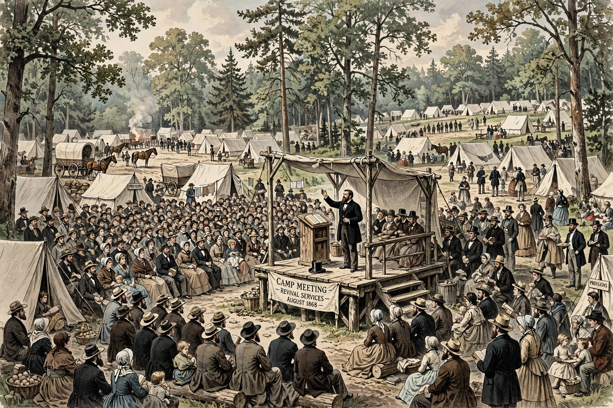

A camp meeting is a form of Protestant Christian religious gathering involving preaching and prayer, held outdoors over several days, with participants camping on site. It was central to the Second Great Awakening in the United States.
| Camp meeting | |
|---|---|
 | |
| Tradition | Methodism, holiness, evangelicalism |
Emerging on the American frontier around 1800 — notably the Cane Ridge Revival of 1801 in Kentucky — camp meetings drew thousands who lacked settled churches. Methodists, Baptists and Presbyterians preached in rotation; intense emotional responses, singing and mass conversions were characteristic. Circuit riders promoted the practice, and Methodists in Britain adopted it from 1807 despite official disapproval.
In the later 19th century many sites became permanent campgrounds with cottages arranged around a tabernacle, associated with the Holiness movement. Camp meetings continue today in Methodist, Nazarene, Pentecostal and African American church traditions, and influenced gospel music and the summer camp movement.
Recreated from memory.